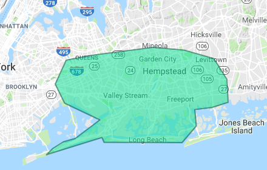

SERVING THE SOUTH SHORE OF LONG ISLAND SINCE 1970.
Our services include:
Lawn Sprinkler Design and Installation
Well and Pump water supply systems
Complete Service and Maintenance
Seasonal Winterize Agreements
Residential and Commercial systems
Outdoor Landscape Lighting
Ponds and Water Features
Aquaponic Greenhouse Construction and Services
Please see below the service area for our services and if you have any questions feel free to call our office: 516-239-0694

waterwell-pic
WELLS & PUMPS
Do you know……
There is a clean, abundant source of water 30 feet below your property
Metered water is currently costing you $6.00 per 1000 gallons in SW Nassau county. $12.00 per 1000 gallons in Queens (NYCDEP)
An automatic lawn sprinkler consumes 60-75% of your summer usage.
Systems can use thousands of gallons each time they operate
BREAK FREE FROM YOUR WATER METER!
Install a well/pump system at your home or business. Simple connections to your existing sprinkler system included.
ALL ABOUT YOUR SHALLOW WELL INSTALLATION:
Our non-invasive method of installing shallow irrigation wells allows placement just about anywhere in the customer yard. A preferred location is close to the tap on an existing system or by a source of electric/controller location for a new installation.
A standard well consists of a stainless steel point and 1-1/2” PVC well pipe. We drop this to a depth that will yield the best volume of water. This is found at a level of coarse sand or small gravel.
The pump will be a 1 HP Goulds GT series with a check valve .
This system will be able to supply 15-20 GPM at 30 PSI
RUST PREVENTION SYSTEMS
In areas of high iron (Fe) content in groundwater, RUST PREVENTION SYSTEMS can be installed to mitigate the orange rust stains seen on concrete and fences. A small container and special metering device will inject small quantities of an iron binding compound as the sprinkler system waters. This will bind or hold the iron in its dissolved form (ferrous) and not allow it to oxidize and precipitate out as (Ferric) which causes the rust stains. In most cases, a yearly refill of the compound will suffice for a season’s irrigation.
WATER WELL PAYBACK CALCULATOR
CREDENTIALS
ABOUT US
Gary Caparelli has professionally designed, installed and serviced hundreds of lawn sprinkler systems for discerning clients in many of Long Island"s Finest communities. He was among the first on Long Island to obtain professional credentials as a Certified Irrigation Contractor (CIC) from the National Irrigation Association. His expertise in the field ranges from residential and commercial installations to major golf course systems for New York City Department of Parks and Recreation.
In 1989, Gary developed a method for installing shallow irrigation wells along the South Shore to supply inexpensive ground water for lawn sprinkler systems. Currently, the company has expanded its operation to include Outdoor Landscape Lighting, Residential Ponds, Water Features, and a first on Long Island, Aquaponic Greenhouse Construction, for growing fresh, organic fruits and vegetables in your backyard.
Irrigation and Well/pump systems remain our main focus, but we are proud to offer these other innovative services to all our clients.